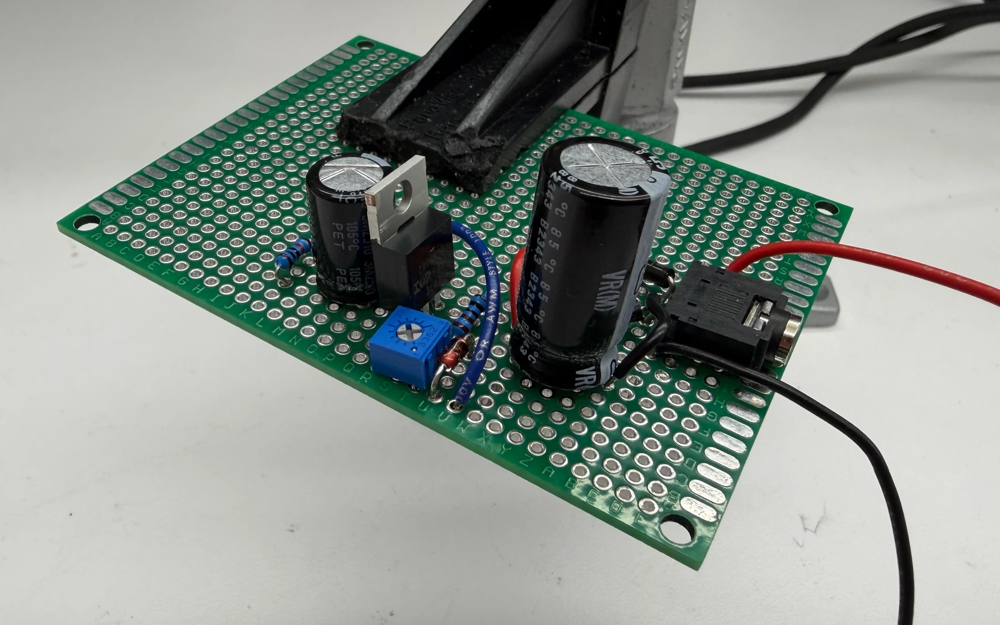
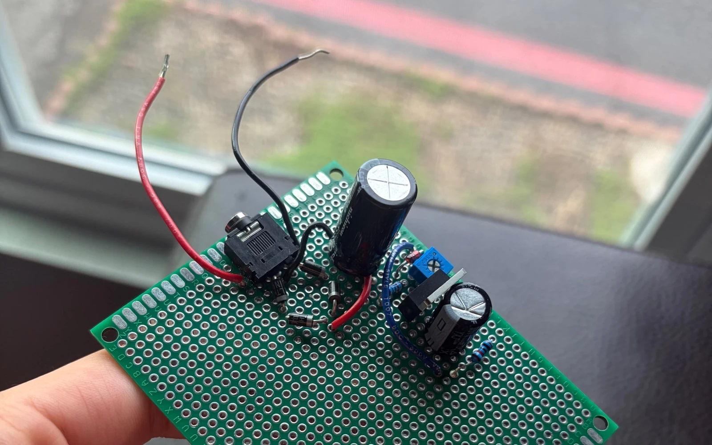
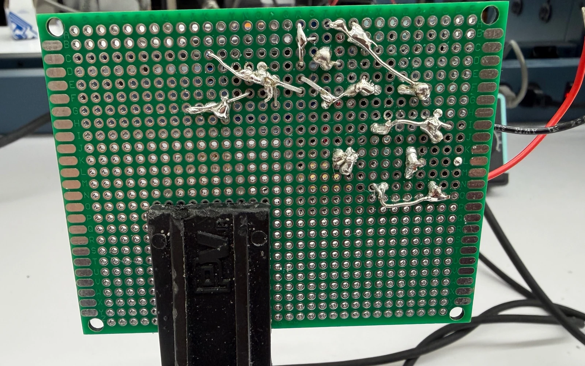

Variable AC-DC Power Supply
Analog Circuit Design • Linear Power Supply



Overview
An adjustable bench power supply that plugs into a wall outlet and outputs a steady 0–20 V DC. It was built and tested one stage at a time, with each stage fixing a weakness of the one before it:
- The transformer made wall power safe to work with.
- The rectifier made it one polarity.
- The capacitor smoothed it.
- The Zener diode held it at a fixed 24 V.
- The potentiometer made it adjustable.
- The MOSFET let it drive real loads without sagging.
Signal chain: wall (120 V AC) → transformer (≈24 V AC) → bridge rectifier (pulsing DC) → filter capacitor (≈36 V, small ripple) → Zener regulator (steady 24 V) → potentiometer (0–24 V setpoint) → MOSFET follower (0–20 V that holds up under load).
Stage-by-Stage Build
Step-Down Transformer
A 24 V AC wall adapter steps 120 V down to about 24 V rms. Alternating current in the primary coil creates a changing magnetic flux in the iron core. That flux induces a smaller voltage in the secondary coil, in proportion to the turns ratio. Because it relies on changing flux, a transformer passes AC but not DC. The peak voltage is:
Vpeak = Vrms × √2 ≈ 24 V × 1.41 ≈ 34 V
Unloaded, the adapter actually peaks near 39 V, because adapters are rated at full load.
Bridge Rectifier
Four diodes arranged in a diamond flip the negative half of each AC cycle positive, so current always leaves in the same direction. Each half-cycle passes through two diodes, so the output loses two diode drops and pulses at 120 Hz instead of 60 Hz:
Vout ≈ |Vin| − 2VD ≈ |Vin| − 1.4 V
Filter Capacitor
A 1000 μF capacitor charges to each peak and then supplies the load until the next one. This smooths the pulses into a nearly flat 36 V or so. The small dip between peaks, called ripple, is roughly:
ΔV ≈ IloadfC
With a 1 kΩ test load drawing 36 mA, that predicts 36 mA ÷ (120 Hz × 1000 μF) ≈ 0.3 V, and the measured ripple matched.
Zener Regulator
A 24 V Zener diode, mounted reverse-biased behind a 1 kΩ resistor, holds the voltage at a steady 24 V. In reverse breakdown, its voltage barely changes as its current changes, so it acts almost like a 24 V source while the resistor absorbs the leftover ripple. The resistor also sets a current budget:
I ≈ 36 V − 24 V1 kΩ ≈ 12 mA
A load that needs more than that pulls the Zener out of regulation and the output sags. That’s why this stage alone can’t power much.
Adjustable Output
A 10 kΩ potentiometer across the Zener works as a voltage divider, setting the output anywhere from 0 to 24 V, where x is the resistance between the wiper and ground:
Vout = 24 V × x10 kΩ
The catch is that the divider has over a kilohm of internal resistance, so any real load drags the voltage down.
MOSFET Output Stage
An N-channel MOSFET wired as a source follower isolates the potentiometer from the load. The potentiometer drives the gate, and the output comes off the source one gate-source voltage lower:
Vout = Vin − VGS
With a threshold near 3 V, the maximum output is about 20 V. The insulated gate draws essentially no current, so the potentiometer is never loaded. Meanwhile, the output resistance is only about 1/gm, which shrinks as current rises.
The drain connects to the 36 V capacitor node rather than the Zener, because that node can supply far more than the Zener’s 12 mA budget. Ripple there mostly doesn’t reach the output, since the MOSFET’s current is controlled by its gate, which sits on the clean Zener-regulated voltage. The trade-off is heat: the MOSFET drops VDS = VDD − Vout, so a low setting into a heavy load warms the transistor.
A 470 μF output capacitor smooths what’s left and covers sudden current demands. A 10 kΩ resistor across the output keeps the MOSFET conducting slightly, so the output stays defined with no load attached.
Results
Set to 5 V, the output only fell to 4.39 V into a 100 Ω load, a source resistance of about 14 Ω. Without the MOSFET stage, the Zener-regulated 24 V dropped to 11.5 V into a lighter 470 Ω load.
Next Improvement
A shorted output would let the MOSFET pull as much current as the transformer can deliver, and it would overheat. A 1 A fuse in series with the output is the simplest fix. A resettable option is an active current limit, where a small sense resistor turns on a transistor that pulls the gate down when current gets too high.